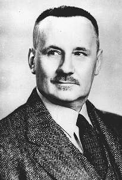

Научные труды Г.В. Вернадского
|  |
Вернадский Георгий Владимирович
(20.VIII.1888-12.VI.1973), выдающийся русский историк,
сын известного ученого В.И.
Вернадского (1863-1945). Ученик В.О.
Ключевского, С.Ф. Платонова, Р.Ю.
Виннера. Эмигрировал из России в 1920
году.
Профессор Йельского
университета, читал курсы лекций в
Гарвардском, Колумбийском,
Чикагском университетах. В США и
Европе признан крупнейшим
специалистом по русской истории.
Лауреат премии "За выдающиеся
заслуги в славянских
исследованиях" (1970). Автор
многочисленных статей и
монографий. Вершина творчества Г.В.
Вернадского - пятитомный труд
"История России", в который
вошли его отдельные пять его книг. Первые
два тома были написаны в соавторстве с
Михаилом Карповичем*.
Труд Вернадского явился
воплощением его исторической
концепции - идеи взаимодействия
природы и общества, как главного
содержания всемирно-исторического
процесса. Своеобразие
национального развития русского
народа, по мнению Вернадского,
обусловливалось двумя комплексами
причин: внешним влиянием на
общество природно-географических
факторов и внутренним
саморазвитием социального
организма.
|
Работы Вернадского оказали
непосредственное влияние на
философию Л.Н. Гумилева.
- Биография Г.В. Вернадского
- И.В.
Кондаков. Г.В. Вернадский
- Опубликовано // Культурология.
XX век: Энциклопедия / Левит, С. Я. сост. -
СПб., Университет, 1998. т. 1, С. 114-117.
- "История
России"
- Том
1 "Древняя Русь"
(1943)
- Том
2 "Киевская Русь" (1948)
- Том
3 "Монголы и Русь" (1953)
- Том
4 "Россия в средние века"
(1958)
- Том
5 "Московское царство" (1968-69)
- Научные
статьи
- "Монгольское иго в
русской истории"
- О роли
татаро-монгольского
нашествия в исторических
судьбах России.
Благотворный характер
того феномена, который
принято называть
"игом", пытались
показать в своих работах
Л.П. Карсавин, Н.С.
Трубецкой, В.П. Никитин, П.Н.
Савицкий, Н.П. Толь, Э.
Хара-Даван. Наиболее
подробно и обстоятельно
рассматривал эту проблему
Г.В. Вернадский. Данную
статью следует
рассматривать как
конспективное и, вместе с
тем, достаточно полное
изложение тех идей,
которые представлены в
"Начертании русской
истории" (1927), а также в
других работах автора,
посвященных истории
Евразии.
Опубликовано
"Евразийском временнике
", книга V. Париж, 1927,
С.153-164.
- "Два подвига св.
Александра Невского"
- Размышления о
деяния св. князя Александра Невского и его
политике в отношении Великой Монгольской
империи и латинского
Запада.
Опубликовано
"Евразийском временнике
", книга IV. Прага, 1925,
С.318-337.
- "Русский
народ и его место в истории" (12/06/2003)
- Первый два параграфа из
книги "Начертание
русской истории", ставшей наброском для
пятитомника "История России".
Опубликовано Начертание
русской истории. -
Прага, Евразийское книгоиздательство 1927, Ч.
1. 264 с.
Примечание: Карпович Михаил Михайлович
(1887-1959) - историк, с 1917 г. в США - секретарь
посла России в США Б.А. Бахметева, профессор
русской истории в Гарварде, главный
редактор ⌠Нового журнала■.
| |
|